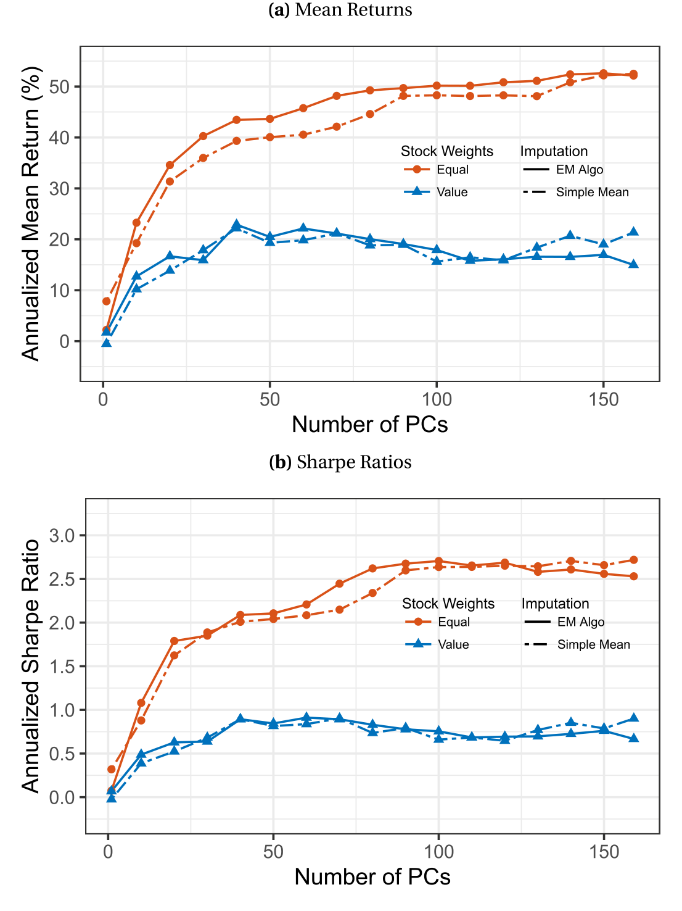
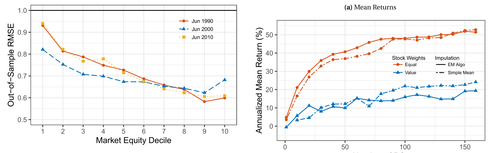
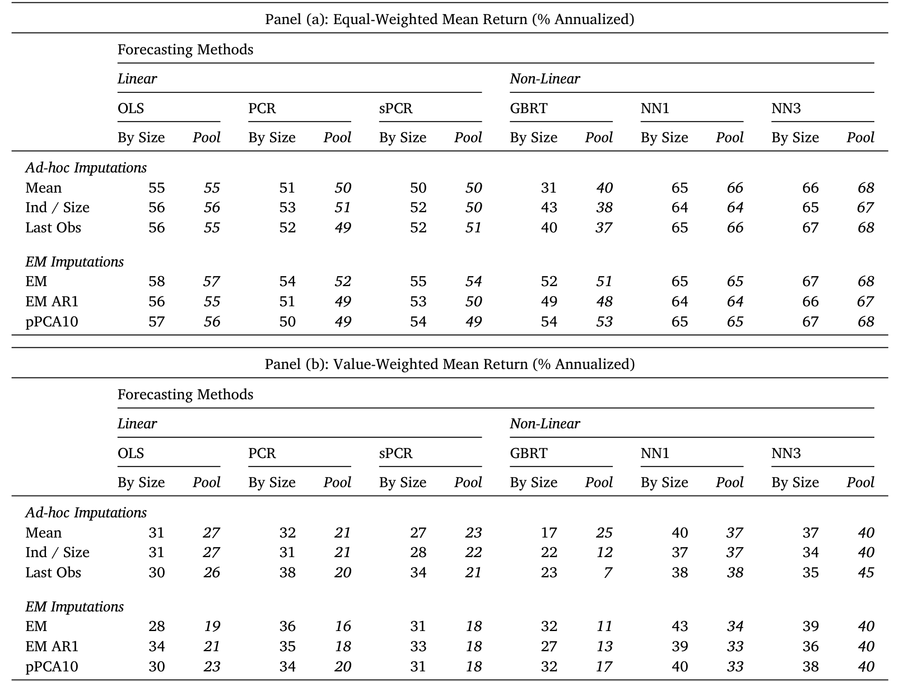
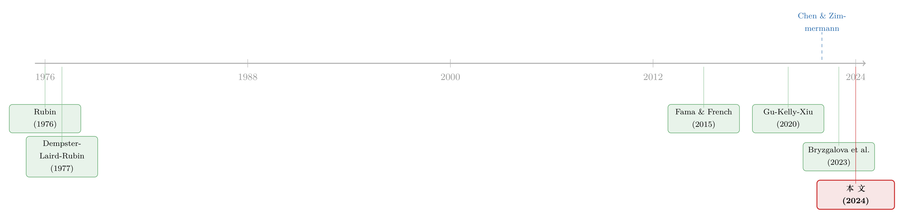

缺失值的「无用之用」：当朴素的均值填补，打败了教科书里的最优算法
本文读的是 Chen & McCoy (2024, Journal of Financial Economics)：把 159 个横截面收益预测变量喂进机器学习模型时，「该拿缺失值怎么办」是个绕不过去的脏活。作者发现，最朴素的横截面均值填补 (cross-sectional mean imputation) 与教科书力荐的期望最大化 (expectation-maximization, EM) 算法，给出的组合收益几乎一模一样——而且 EM 有时还会因为引入估计噪声而跑输。背后的原因，是关于这批数据的三个朴素事实。
1 一个没人愿意谈的脏活
机器学习进入资产定价，是过去十年最热闹的一条线。故事的主线大家都熟：把预测变量(predictor)的数量往上堆。Freyberger et al. (2020) 用了 62 个，Kelly et al. (2023) 用了 138 个，Han et al. (2022) 一口气堆到 193 个；每一篇都告诉你，把变量集扩到 Fama and French (2015) 那五个之外，是有经济回报的——Sharpe 比率能从 0.8 一路冲到 1.8 甚至 2.4。
但热闹背后，埋着一件没人愿意拿到台面上说的脏活：缺失值 (missing values)。
道理很简单。单看一个预测变量，缺失也许不算严重；可一旦你要把上百个变量「拼」到一起喂给模型，麻烦就被指数级地放大了。机器学习的标准做法是：一只股票只要有任何一个变量缺失，这只股票这个月就不能用。于是问题来了——作者算了一笔账：如果你老老实实按这个标准，去用 Chen and Zimmermann (2022) 数据里观测最全的 125 个变量，那么你会丢掉 99% 的股票。
99%。这不是「处理一下」就能糊弄过去的小数目。它意味着：当变量数量足够多时，研究者根本没得选——要么填补缺失值，要么没有样本。填补（imputation）听上去很危险，可机器学习的研究者别无选择。
那么，该怎么填？
2 张力：教科书的「最优」，和华尔街的「将就」
这里就出现了本文的核心张力。
填补缺失值这件事，统计学有一套成熟的理论。最权威的教科书 Little and Rubin (2019) 力荐的是 EM 算法——它在合适的假设下更少偏误、更有效率，理论上能给出更准的预测。可在资产定价的实践里，几乎所有人用的却是最「将就」的办法：横截面均值填补——一个变量这个月缺了，就用这个月所有其他股票在该变量上的横截面均值去补。Gu et al. (2020)、Freyberger et al. (2020)、Kozak et al. (2020)，全都这么干。
一个值得记住的小技巧：本文在填补前先把每个变量标准化成零均值、单位方差。于是「均值填补」实际上等价于——缺失的地方一律填 0。它简单到近乎偷懒。
教科书说 EM 更好，实践里大家用最笨的均值——这两者之间，到底谁对？一个自然的问题是：如果认真用上 EM，机器学习组合的表现会不会显著更好？
作者把这个问题摆上了实验台。他们用 159 个预测变量，搭配主成分回归 (principal component regression, PCR)、神经网络、梯度提升等多种预测方法，把均值填补和 EM 正面对撞。结果令人意外：
- 用均值填补、再用三层神经网络做预测、排序成多空十分位组合，年化收益是 66%（等权）/ 37%（市值加权）；
- 换成横截面 EM填补，几乎纹丝不动：67%（等权）/ 39%（市值加权）。

Figure 2: Missing Data Effects in 159-Predictor Strategies using PCR. Each
把预测方法换成 PCR，结论一样：均值填补给出 51%／32%，EM 给出 54%／36%——差异小到可以忽略。这种「不管你用什么填补方法，结果都差不多」的不变性 (invariance)，贯穿了几乎所有的预测方法与填补方法组合。
一个理论上严格占优的算法，在实践中却毫无优势可言。这就是论文要解释的反常。
3 真正关键的一步：观测数据里，根本没有缺失数据的信息
为什么会这样？真正关键的一步，在于回答一个更底层的问题：当一个值缺失时，我们手上观测到的那些数据，到底能告诉我们多少关于这个缺失值的信息？
EM 之所以「理应更优」，全部的本钱就在于——它假设观测数据里藏着缺失数据的线索，于是用回归把这条线索榨出来。而均值填补则干脆地说：观测数据里没什么有用的，缺了就填个平均数算了。
作者的核心论断是：在横截面预测变量这批数据上，均值填补的「悲观假设」其实更接近真相。他们用三个朴素的事实把这一点钉死。
事实一：缺失以「时间大块」的形式出现。 对那些这个月缺了账面市值比 (book-to-market) 的股票，有 81% 在此前的每一个月也都缺这个变量。换句话说，缺失极其持久——一个变量从「没数据」到「有数据」往往是一次性的结构断点，之前一直缺，之后一直有。这意味着，时间序列方向上几乎没有关于缺失值的信息。
事实二：变量之间横截面相关性很弱。 几乎所有变量两两之间的相关系数都落在 −0.25 到 +0.25 之间；前 10 个主成分加起来也只解释了总方差的 40%（关于这套「横截面里到底有几维信息」的讨论，可参见《压缩横截面：因子动物园的尽头，不是更少的因子，而是更聪明的收缩》）。变量彼此几乎不相关，那么用「别的观测到的变量」去推断「这个缺失的变量」，自然也榨不出多少东西。
事实三：缺失本身也是成块的，按数据来源组织。 这一条最微妙。账面市值比和盈余价格比 (earnings-to-price) 的横截面相关性其实不低，约 0.3——按理说可以互相填补。可问题是：在缺账面市值比的股票里，约有 90% 同时也缺盈余价格比。两个变量一起缺，那点 0.3 的相关性就根本用不上。

Figure 4: Imputation Errors in a Random Masking Exercise. We measure
三条合在一起，结论就水落石出了：观测到的变量，几乎不携带关于缺失变量的信息。既然如此，那 EM 辛辛苦苦估计出来的那点「线索」，本质上都是噪声。你一刀切地填上横截面均值，反而干净利落。
更糟的是，在某些设定下，EM 不只是「没用」，而是有害。作者按微盘、小盘、大盘分别建模时一切尚好；可一旦把所有股票放在一起同时建模，EM 给出的市值加权收益常常小于朴素均值填补。原因正是：EM 引入的估计噪声，在预测结构没搭好的时候会被放大；而随机掩码 (random masking) 实验显示，EM 的填补误差恰恰在小股票里最大。
4 EM 到底在做什么：把最核心的那个方程拆开看
为了让上面的直觉落地，我们把本文方法的核心方程拆开讲一遍。它不是一个结构经济模型，而是一套填补算法，但其几何含义非常清晰。
设有 \(N\) 只股票，股票 \(i\) 在第 \(t\) 月有一个预测变量向量 \(X_{i,t}\)。把它拆成缺失的子向量 \(X_{miss|i,t}\) 和观测到的子向量 \(X_{obs|i,t}\)。比如 \(X_{i,t}=\begin{bmatrix}1&2&3&4\end{bmatrix}'\)，若第一、三个元素缺失，则 \(X_{miss|i,t}=[1\ 3]\)、\(X_{obs|i,t}=[2\ 4]\)。
EM 的思路是：先估出股票间的协方差矩阵 \(\hat\Sigma_t\)（\(\Sigma_t\) 是 \(X_{i,t}\) 的横截面协方差矩阵，可以像 BLLP 那样用两两都有数据的股票对算样本协方差），再用「缺失块对观测块做回归」的方式去填。最核心的填补公式是：
这一步的直觉是：把缺失的变量，写成观测到的变量的线性组合，权重 \(\hat\beta_{i,t}\) 来自变量间的协方差结构。如果变量之间相关性强，\(\hat\beta_{i,t}\) 就能借观测值有效地预测缺失值；如果相关性弱（也就是上一节的「事实二」），\(\hat\beta_{i,t}\) 趋近于 0，那么——
$$\hat{X}_{miss|i,t}=\hat{\beta}_{i,t}'\,X_{obs|i,t}\;\longrightarrow\;0.$$
而由于变量已被标准化成零均值，填 0 恰恰就是均值填补。
于是反转出现了：在「弱相关 + 成块缺失」的世界里，EM 的最优解会自动退化成均值填补。两者之所以给出几乎相同的组合收益，不是巧合，而是数据结构的必然。EM 唯一多出来的，是估计 \(\hat\Sigma_t\) 和 \(\hat\beta_{i,t}\) 时引入的那一层估计噪声——在它本该带来收益的地方它带不来，在它不该添乱的地方它却添了乱。
这套填补方法的合理性，最终依赖 Rubin (1976) 的可忽略性 (ignorability) 假设。作者坦承，159 个变量的缺失机制错综复杂——Fig. 1 的「缺失地图」里有几十种不同形状，要为每一种写一个缺失模型几乎不可能，所以只能退而假设可忽略，把焦点放在 EM 这类方法上。
5 顺带回答了一个老问题：横截面到底有几维？
高维预测变量天然引出一个问题：这上百个维度里，真正对预期收益有贡献的有几个？本文的主成分回归给出的答案很微妙，且高度依赖测量方式。
按标准方法算主成分，约 75 个 PC 才能撑起等权口径下 50%／年的潜在收益，40 个 PC 撑起市值加权的约 20%。但标准 PCA 是无监督的，它无视了收益信息。一旦用 Huang et al. (2022) 的 scaled-PCA 把收益信息纳进来，维数骤降：等权口径约 30 个 PC，市值加权只要 15 个。

Table 4: shows the result across all combinations of the 6 imputa-
这个发现，恰好接上了关于横截面因子结构的长期争论：如果你关心所有股票，那预测的维度确实很多；可如果你只看大股票，一个中等强度的因子结构是站得住的。换句话说，「因子动物园」有多大，取决于你站在哪个市值段上看（这条线也可参见《弱替代：因子动物园是从哪里冒出来的？》）。
6 缺失从哪来：三个驱动力
本文还有一个常被忽视、却极有价值的贡献：它细致地刻画了 Chen and Zimmermann (2022) 数据里缺失值的来源。作者归纳出三个驱动力——(1) 底层数据本身缺失；(2) 变量需要很长的历史数据；(3) 用缺失来「替代」交互效应。
几个有代表性的数字（均为 1985 年的观测占比）：规模 (size) 观测率 99.8%、12 个月动量 91.6%；一旦要用会计数据，掉到 60%–75%（账面市值比 74.4%、资产增长 67.1%）；要用分析师预测数据，最多到 50%（EPS 预测修正 46.0%）；要 5 年销售增长这类长历史的，约 40%。最极端的是「高卖空兴趣股票中的机构持股」(Asquith et al. 2005)——它既要专门的底层数据、又用缺失去代表交互效应，1985 年观测率只有 0.2%。
第三个驱动力尤其值得玩味：很多「缺失」其实是研究者人为塞进去的——资产有形性 (asset tangibility) 只对制造业公司计算、对其余公司一律记为缺失；派息率 (payout yield) 把非正派息的股票剔成缺失。这其实是在用「缺失」这个标签，去近似一个本该用交互项建模的非单调关系。作者把「把这些交互效应正确还原」留给了未来研究——这是一条很好的延伸方向。
7 文献脉络
把这条线捋一捋，它其实是两股河流的交汇。
一股来自统计学的缺失数据理论：Rubin (1976) 提出可忽略性，Dempster, Laird and Rubin (1977) 给出 EM 算法，最终沉淀为 Little and Rubin (2019) 的经典教科书——这一脉的信条是「认真建模、追求无偏与有效」。
另一股来自资产定价里的机器学习浪潮：从 Fama and French (2015) 的五因子出发，Gu et al. (2020) 把机器学习系统地引入实证资产定价，Kozak et al. (2020) 用收缩处理高维横截面，Freyberger et al. (2020)、Kelly et al. (2023)、Han et al. (2022) 不断把变量数量推高；而 Chen and Zimmermann (2022) 的开源数据集，则为整条线提供了「弹药库」。这一脉里，几乎所有人都顺手用了均值填补——却很少有人停下来问一句：这样做到底对不对？

本文正是站在两股河流的交汇处，为「资产定价里那个无处不在的均值填补」提供了一个严格的辩护。与它同期的 Freyberger et al. (2023)、Bryzgalova et al. (2023)、Beckmeyer and Wiedemann (2023) 各自主张一种更精巧的填补算法，本文则反其道而行——它不去推销某一种算法，而是冷静地论证：在这类数据上，精巧未必有用，朴素恰恰够用。
8 评论与延伸（Q&A + 研究方向）
(a) 几个可能的疑问
Q：均值填补和 EM 收益几乎一样，会不会只是因为多空组合本身就把噪声平均掉了？
不全是。作者把不变性展示在多种预测方法（PCR、神经网络、GBRT）和多种填补方法上，且配有随机掩码实验直接度量填补误差本身——误差量级小、且集中在小股票，这是机制层面的证据，而不只是组合层面的「碰巧抵消」。
Q：那 EM 在哪些情况下真的会跑输？这是不是个边角案例？
不是边角。当把所有股票放在一起同时建模（而非按市值分层）时，EM 的市值加权收益常常小于均值填补。机制是估计噪声在「预测结构没搭好」时被放大。这恰恰提醒：填补方法不能脱离下游的预测结构单独评价。
Q：把缺失一律填 0，难道不会系统性地低估某些真实非零的变量吗？
会有偏误，这正是 EM 理论上占优的地方。但本文的论点是：由于变量弱相关、缺失成块，观测数据能纠正的偏误极其有限，而 EM 为此付出的估计噪声代价可能更大。是「偏误小一点」还是「方差小一点」更划算——在这批数据上，答案偏向后者。
Q：这个结论能推广到公司债、期权这些其它资产类别吗？
不能直接推广。作者明确把期权类变量排除在外（期权价格 1990 年代才有）。结论的成立依赖「弱横截面相关 + 成块缺失」这两个性质；换一类资产，这两个性质未必同样成立，需要重新检验。
Q：横截面到底几维，为什么标准 PCA 和 scaled-PCA 差这么多（75 vs 30）？
因为标准 PCA 是无监督的，只看方差不看收益；它会把一些「方差大但不预测收益」的方向也算进去。scaled-PCA 用收益信息加权后，真正对收益有贡献的维度被凸显出来，所以维数更低。这说明「有几维」本身就是个依赖测量方式的问题。
Q：人为塞进去的缺失（如资产有形性只算制造业）也用均值填补，会不会把信息抹掉？
会，而且这正是本文坦承的局限。这类缺失编码了交互效应，填均值等于丢掉了「非制造业」这一信息。作者把「还原这些交互项」列为未来工作——这也是下面一个研究方向的来源。
(b) 几个可能的研究问题与提案
1. 把「人为缺失」还原成交互项，再评填补方法。 【经济故事】本文指出资产有形性、派息率等变量的缺失其实编码了交互效应。若把这些缺失拆回「变量 × 行业/派息状态」的交互项，机器学习模型本可自己学到非单调关系，填补方法的优劣排序可能因此改变。 【可行性】高。数据现成（CZ 开源数据 + 各变量构造代码），识别靠对照实验（还原前 vs 还原后的组合收益），唯一的工作量在于逐个变量改写构造代码。
2. 把同一套缺失值诊断搬到公司债市场。 【经济故事】公司债的横截面变量（评级、久期、流动性指标、发行人会计变量）缺失同样严重，但其相关结构未必像股票这样弱。若公司债变量横截面相关更强，则 EM 可能真的占优——这会反过来界定本文结论的适用边界。 【可行性】中。需要 TRACE + Mergent FISD + Compustat 合并，缺失诊断（时间块、相关性、来源块）可照搬本文方法；难点在于公司债观测频率低、变量构造不统一（这条线可参见《把机器学习的黑箱拆成玻璃箱：公司债收益率能被「看懂」地预测吗？》）。
3. 外资持有人数据里的缺失结构与填补。 【经济故事】跨境持仓数据（如 13F、各国托管数据）的缺失高度依赖披露制度，缺失本身可能与「是否外资」相关，违反可忽略性。研究填补方法在「非随机缺失」下的稳健性，对外资—流动性这条线尤为关键。 【可行性】中偏低。识别难点在于缺失机制不可忽略，需要外生的披露规则变化（如某国突然要求申报）来检验，数据可得性是主要瓶颈。
4. 填补噪声如何沿预测结构传导。 【经济故事】本文发现 EM 在「不分层建模」时跑输。一个自然的问题是：填补噪声放大的程度，是否可以写成预测模型复杂度（正则化强度、网络深度）的函数？这能给出「该用多复杂的模型 + 多精巧的填补」的配对法则。 【可行性】高。纯方法/模拟研究，用本文公开代码即可做敏感性矩阵；识别不是问题，工作量在于系统的网格实验。
9 我的判断
这是一篇「做减法」的好论文，贡献清晰且诚实。
贡献。 它为机器学习资产定价里一个无处不在、却几乎从未被认真审视的操作——均值填补——提供了严格的辩护，并且不是靠「结果差不多」一句话糊弄过去，而是用三个可检验的数据事实把机制讲透，再用 EM 退化成均值填补的逻辑收尾。它顺带刻画的缺失来源（159 个变量逐一）和维数测量（标准 PCA vs scaled-PCA），都是有长期参考价值的「公共品」。在我看来，它最大的价值是方法论上的：提醒大家「理论最优」与「实践有用」之间，隔着一层叫估计噪声的东西。
对识别的担忧。 全部结论都建立在 Rubin (1976) 可忽略性之上，而作者自己也承认 159 个变量的缺失机制复杂到无法建模。一旦缺失是非随机的（比如「人为塞进去的缺失」本身就携带信息），均值填补抹掉的可能就不是噪声而是信号。此外，结论强依赖「弱横截面相关 + 成块缺失」这两个性质——它们在股票上成立，但论文没有、也不可能保证它们在别处成立。
后续想看到什么。 我最想看到的是把「人为缺失」还原成交互项之后，填补方法的优劣是否会重新洗牌；以及把这套缺失诊断搬到公司债、跨境持仓等横截面相关更强、缺失更可能非随机的市场上去——那里，才是真正能检验「朴素是否依然够用」的试金石。
参考文献
- Asquith, P., Pathak, P. A., Ritter, J. R. (2005). Short interest, institutional ownership, and stock returns. Journal of Financial Economics 78, 243–276.
- Bryzgalova, S., Lerner, S., Lettau, M., Pelger, M. (2023). Missing financial data. Available at SSRN 4106794.
- Chen, A. Y., McCoy, J. (2024). Missing values handling for machine learning portfolios. Journal of Financial Economics 155, 103815.
- Chen, A. Y., Zimmermann, T. (2022). Open source cross-sectional asset pricing. Critical Finance Review.
- Dempster, A. P., Laird, N. M., Rubin, D. B. (1977). Maximum likelihood from incomplete data via the EM algorithm. Journal of the Royal Statistical Society, Series B 39, 1–22.
- Fama, E. F., French, K. R. (2015). A five-factor asset pricing model. Journal of Financial Economics 116, 1–22.
- Freyberger, J., Neuhierl, A., Weber, M. (2020). Dissecting characteristics nonparametrically. Review of Financial Studies 33, 2326–2377.
- Freyberger, J., Höppner, B., Neuhierl, A., Weber, M. (2023). Missing data in asset pricing panels. University of Chicago Becker Friedman Institute Working Paper.
- Gu, S., Kelly, B., Xiu, D. (2020). Empirical asset pricing via machine learning. Review of Financial Studies 33, 2223–2273.
- Han, Y., He, A., Rapach, D., Zhou, G. (2022). Expected stock returns and firm characteristics: E-enet, assessment, and implications. Working Paper.
- Huang, D., Jiang, F., Li, K., Tong, G., Zhou, G. (2022). Scaled PCA: A new approach to dimension reduction. Management Science 68, 1678–1695.
- Kelly, B., Malamud, S., Pedersen, L. H. (2023). Principal portfolios. Journal of Finance.
- Kozak, S., Nagel, S., Santosh, S. (2020). Shrinking the cross-section. Journal of Financial Economics 135, 271–292.
- Little, R. J., Rubin, D. B. (2019). Statistical Analysis with Missing Data, vol. 793. Wiley.
- Rubin, D. B. (1976). Inference and missing data. Biometrika 63, 581–592.
- Xiong, R., Pelger, M. (2023). Large dimensional latent factor modeling with missing observations and applications to causal inference. Journal of Econometrics.